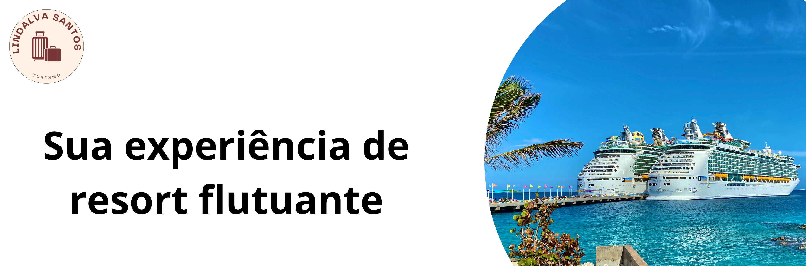

O Melhor do Litoral Brasileiro
Roteiros saindo de Santos, Rio de Janeiro e Itajaí com destino às praias paradisíacas do Sudeste e Nordeste, como Búzios, Ilhabela, Salvador e Ilhéus.

Aproveite a fantástica Temporada Brasileira de Cruzeiros com navios modernos que percorrem os cenários mais lindos do nosso litoral.
Roteiros saindo de Santos, Rio de Janeiro e Itajaí com destino às praias paradisíacas do Sudeste e Nordeste, como Búzios, Ilhabela, Salvador e Ilhéus.
Opções perfeitas de 3 a 4 noites para uma viagem rápida de descanso, além dos cobiçados cruzeiros temáticos, de Natal e o inesquecível Réveillon com vista para os fogos de Copacabana.
Abra as fronteiras e navegue pelos mares mais famosos do mundo com o suporte de roteiros totalmente personalizados.
Navegue pelas águas azul-turquesa das Bahamas, Antilhas e Cozumel. Opções perfeitas com ilhas privativas das armadoras e resorts tropicais a bordo.
Explore a Grécia, Itália, Espanha e França em viagens luxuosas. Uma imersão cultural rica com o conforto de retornar todas as noites para o seu restaurante favorito a bordo.